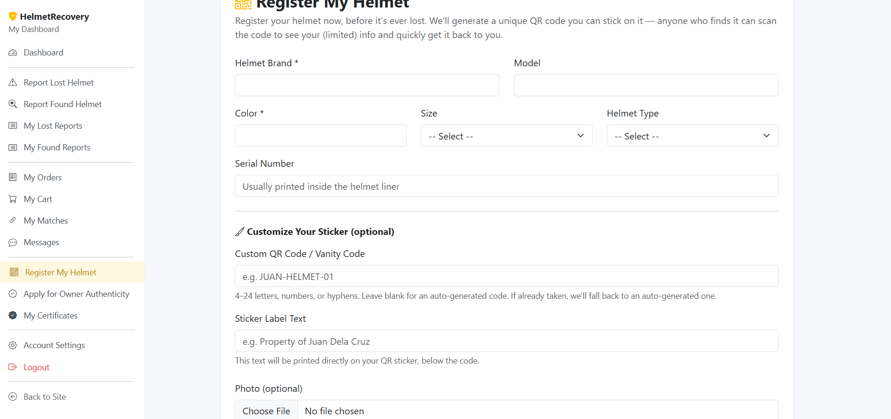
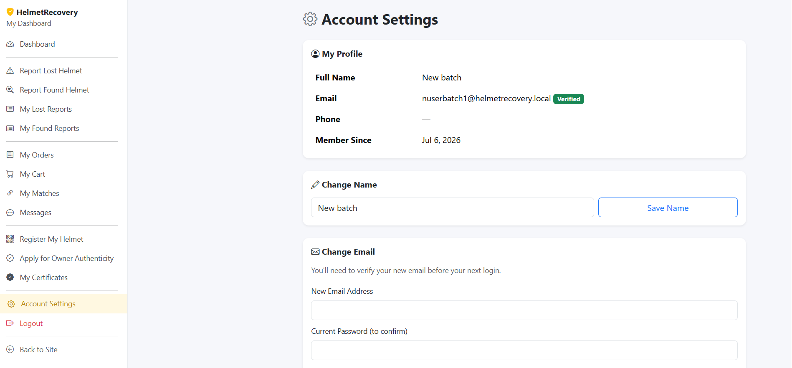
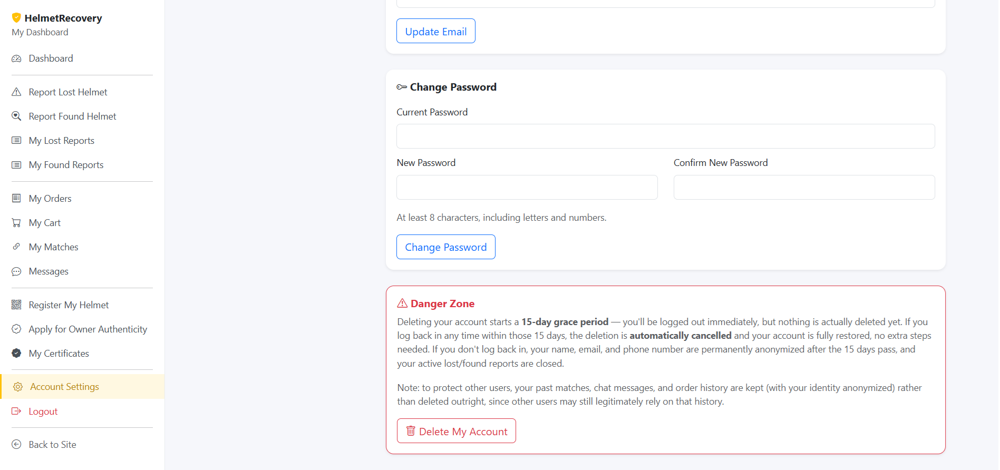
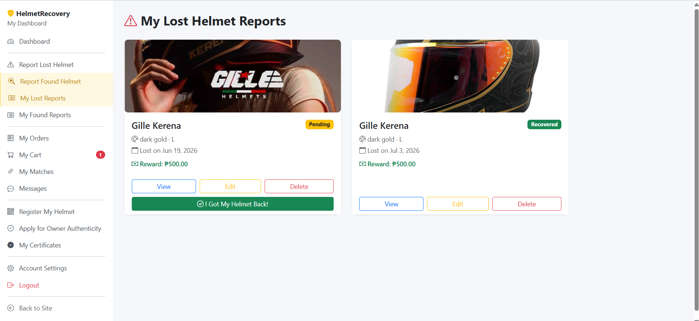
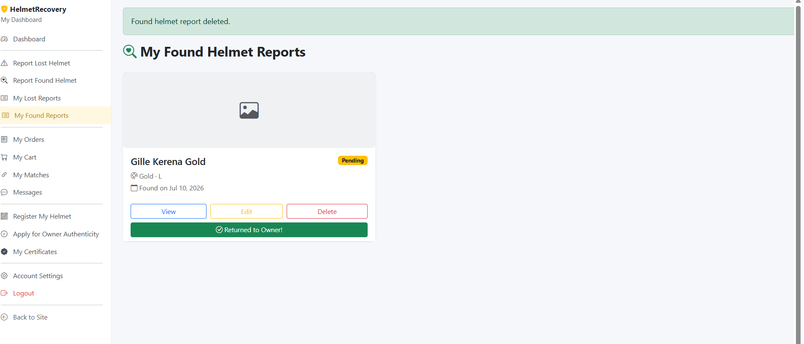
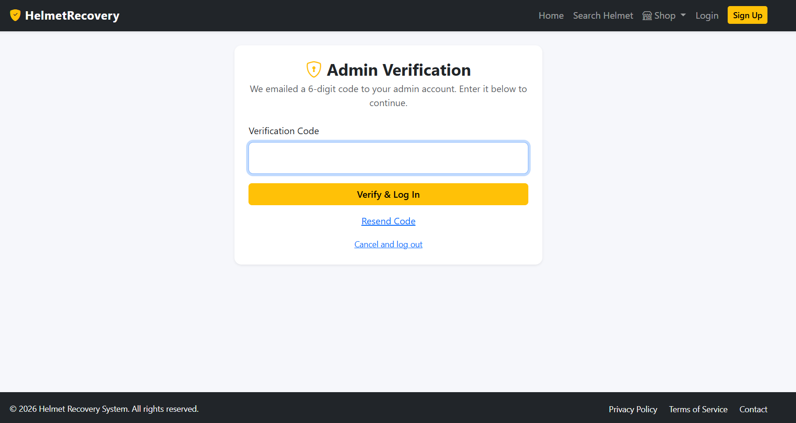

CAPSTONE PROJECT · CASE STUDY
Helmet Recovery System
A secure web application designed to help motorcycle riders recover lost or stolen helmets through QR Code verification, OCR technology, GPS location tracking, and an integrated marketplace.

CAPSTONE PROJECT · CASE STUDY
A secure web application designed to help motorcycle riders recover lost or stolen helmets through QR Code verification, OCR technology, GPS location tracking, and an integrated marketplace.
The Helmet Recovery System is a capstone web application designed to help motorcycle riders recover lost or stolen helmets through a secure and centralized platform. Users can report lost or found helmets, verify ownership using QR Code and Optical Character Recognition (OCR), and communicate efficiently during the recovery process. In addition to the recovery system, the platform includes an integrated online marketplace where users can purchase helmets, accessories, GPS trackers, and authenticity stickers. The application emphasizes security, usability, and accessibility while providing administrators with tools to manage users, reports, products, and system activities.
Secure login and registration for users and administrators.
Verify helmet ownership using unique QR Codes.
Recognize helmet serial numbers through OCR technology.
Track where helmets are lost or found using location services.
Report and match lost or found helmets efficiently.
Purchase genuine helmets, accessories, and safety products.
How the project moved from an identified problem to a deployed, role-based platform.
Studied how existing lost-and-found groups and marketplaces handle ownership claims, and confirmed the core gap: recovered helmets rarely reach their owners because there's no reliable way to prove who they belong to.
Mapped the data model connecting users, helmets, reports, and matches, and planned how QR codes and OCR-extracted serial numbers would tie a physical helmet to a verified digital record.
Built the platform in PHP and MySQL, implementing the reporting, matching, and marketplace modules incrementally, with Bootstrap handling the responsive front end.
Walked through the full recovery flow — report, match, verify, message — as different user roles to catch validation and permission gaps before treating any module as finished.
Packaged the system as a complete capstone deliverable, including the admin tools needed to verify reports, manage users, and operate the marketplace going forward.
The Helmet Recovery System provides a centralized web platform where users can report lost or found helmets, verify ownership through QR Code and OCR technology, communicate securely with other users, and purchase motorcycle safety products through an integrated marketplace.
Users can submit detailed lost or found helmet reports with photos, descriptions, and GPS location.
Helmet ownership can be verified using QR Codes and Optical Character Recognition (OCR).
Users can purchase helmets, GPS trackers, accessories, and authenticity stickers directly through the platform.
Registration, Login, Profile Management and Authentication.
Users can create and manage lost helmet reports.
Found helmets can be reported for easier owner matching.
Every registered helmet can have a unique QR Code.
Automatically detects helmet serial numbers.
Purchase helmets and motorcycle accessories.
A closer look at the platform, organized by the journey a helmet takes from being lost to being recovered.

Landing page introducing the platform and routing users to reporting, the marketplace, and their account.

Central hub where users track their reports, matches, and marketplace orders in one place.

Owners link a helmet to their account and generate its unique QR Code before it's ever lost.

Secure sign-in for riders and administrators, gating access to reporting and admin tools.

New riders register with the details needed to verify their identity later during recovery.

Users manage their profile details and keep their contact information current for match notifications.

Self-service account recovery and deletion, handled without needing to contact an admin directly.

Riders submit a detailed lost report with photos, description, and last known location.

Finders log a helmet they've recovered so it can be checked against open lost reports.

Users track the status of every helmet they've reported lost from one list.

Finders keep track of the helmets they've reported and their matching status.

The system compares lost and found reports and surfaces likely matches automatically.

Both parties are notified the moment a likely match is found, with messaging to coordinate the handoff.

Browse genuine helmets, GPS trackers, and authenticity stickers from a single storefront.

Review selected items and quantities before proceeding to checkout.

A straightforward checkout flow with an order summary before the purchase is confirmed.

Central control panel for managing users, reports, products, and system activity.

Admins review flagged reports and matches before they're confirmed, guarding against false claims.

Visual statistics covering reports, active users, and marketplace sales.
A few of the harder decisions made while building the system, and how they were resolved.
Verifying that someone reporting a "found" helmet actually has it, without an in-person inspection.
Combined QR Code scanning with OCR serial-number recognition, so an ownership claim is checked against two independent data points instead of one.
Lost and found reports piling up with no easy way for either side to find each other.
Built an automatic matching system that compares report details and notifies both users the moment a likely match appears.
Keeping the admin side manageable as reports, users, and marketplace orders grow.
Centralized everything into a single admin dashboard with a verification queue, user management, and analytics in one place.
The full source code, database schema, and setup instructions are available on GitHub.